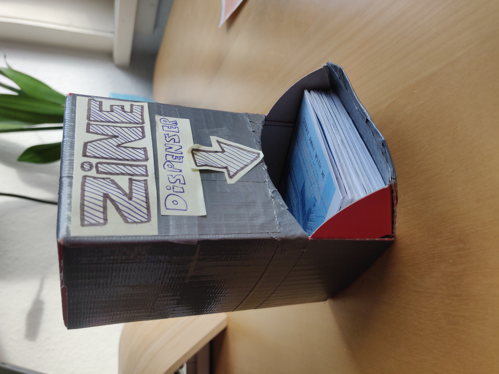
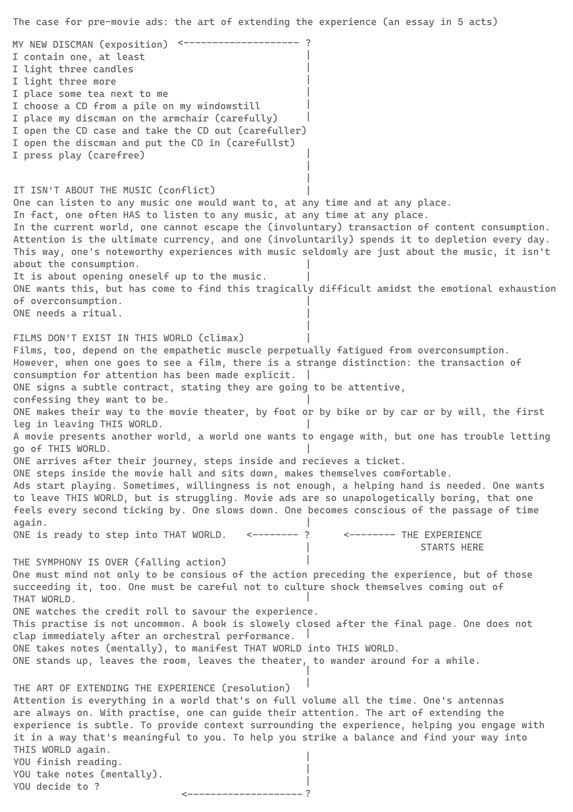
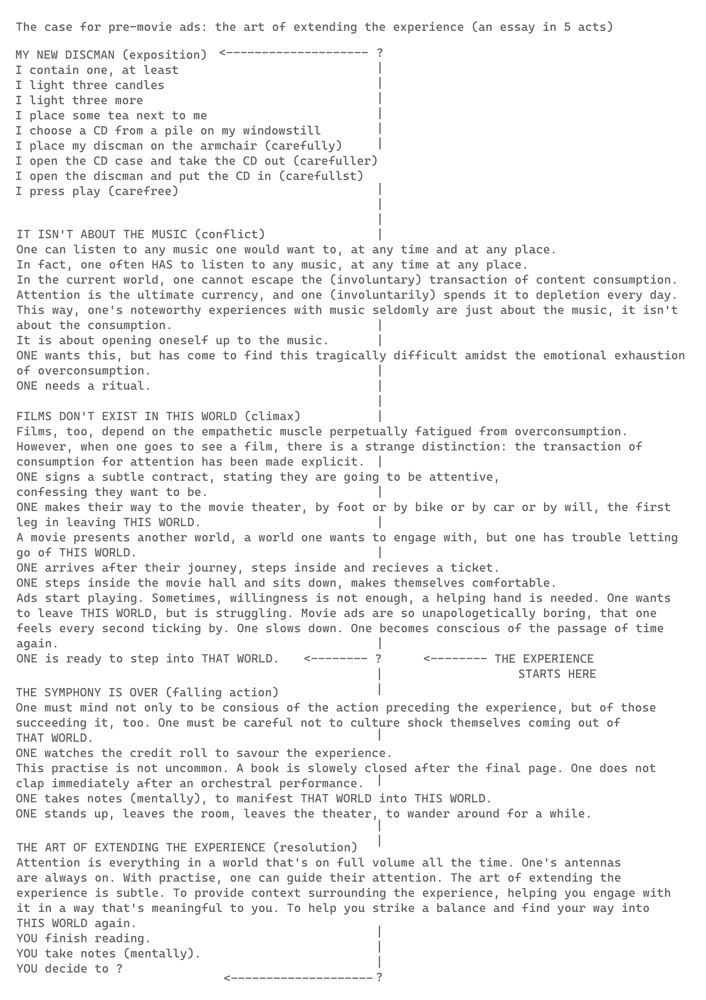

Zineville

Date: April - June 2023
Medium: Zine
As a lover of film, I do not only enjoy the medium, but the experience surrounding the film, too. In April of 2023, I got a cineville membership. This zine comprises my first experiences and is in many ways a reaction to the weird relationship we currently have with consumption. Do we strive for emotion on demand?
 
